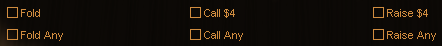

Advance Actions allows you to instruct Poker Academy to perform an action automatically when it becomes your turn. They will appear (as check boxes) when you are still in a hand, but it is not your turn.
The actions that are available to you at any given time will change depending on the current state of the game. If the action you select becomes an invalid action it will be ignored and you have the option of selecting another.